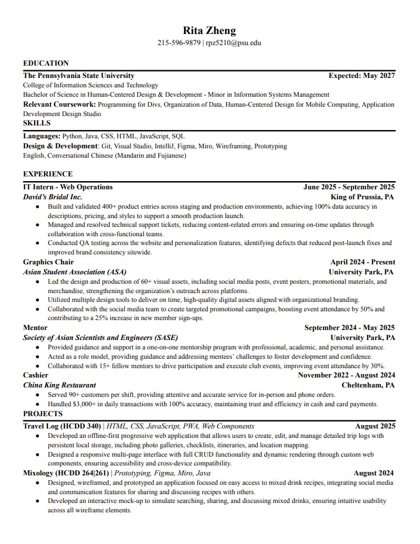

Hi! My name is Rita Zheng. I'm a third-year student at Penn State studying Human-Centered Design & Development. I'm passionate about UI/UX and creating user-friendly and visually appealing designs. I have experience in various design tools and programming languages, and I'm excited and open to learn more!
I enjoy volunteering on campus and finding ways to give back to my community. I also love playing video games and exploring the latest in technology trends. One of my favorite projects was building my own PC, which sparked a deeper interest in hardware and problem-solving.

This past summer, I worked as an IT Intern at David’s Bridal, supporting web operations and helping improve the site’s reliability through troubleshooting, QA, and content updates.
Beyond my internship, I’ve built a strong foundation in UI/UX and product thinking through class projects and leadership roles. I’ve learned how to communicate design decisions clearly, collaborate with teams, and iterate based on feedback.
An offline-friendly travel notebook app where users can save trips, write entries, and keep memories organized in one place. Built with a focus on clean UI and easy navigation.
A prototype for a mixed drink app that helps users explore recipes, discover new drinks, and build a simple experience around searching and browsing.
A web project that generates and displays RPG character updates for GitHub repos, built to make character visuals and details easy to view and share.
A UX prototype concept for a home improvement services app focused on scheduling, service selection, and a clean booking flow that reduces friction for users.